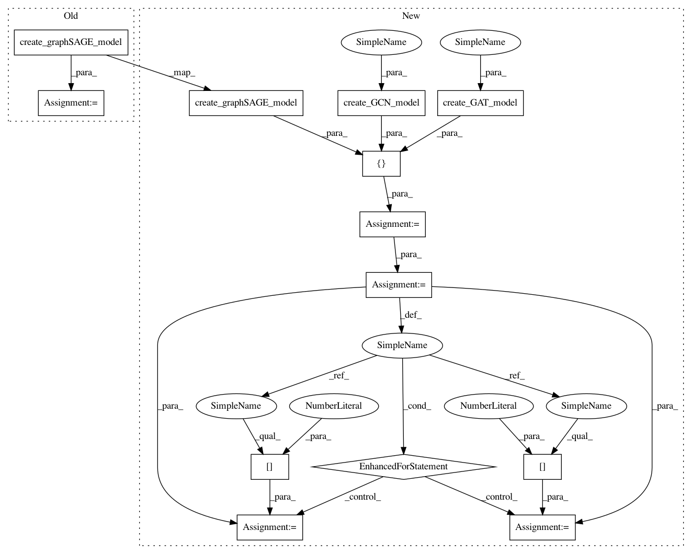

5cfd9a2f9beb209a8ec926a113c50f75c9e2b4a9,tests/utils/test_ensemble.py,,test_predict_generator,#,250
Before Change
graph = example_graph_1(feature_size=2)
base_model, keras_model, generator, train_gen = create_graphSAGE_model(graph)
ens = Ensemble(keras_model, n_estimators=2, n_predictions=1)
ens.compile(
After Change
graph = example_graph_1(feature_size=2)
// base_model, keras_model, generator, train_gen
gnn_models = [
create_graphSAGE_model(graph),
create_GCN_model(graph),
create_GAT_model(graph),
]
for i, gnn_model in enumerate(gnn_models):
keras_model = gnn_model[1]
generator = gnn_model[2]
ens = Ensemble(keras_model, n_estimators=2, n_predictions=2)
ens.compile(
optimizer=Adam(), loss=categorical_crossentropy, weighted_metrics=["acc"]
)
test_gen = generator.flow(test_data)
// Check that passing invalid parameters is handled correctly. We will not check error handling for those
// parameters that Keras will be responsible for.
with pytest.raises(ValueError):
ens.predict_generator(
generator=test_gen, predict_data=test_data
)
// We won"t train the model instead use the initial random weights to test
// the evaluate_generator method.
test_predictions = ens.predict_generator(test_gen, summarise=True)
print("test_predictions shape {}".format(test_predictions.shape))
if i > 0:
// GAT and GCN are full batch so we get a prediction for each node in the graph
assert len(test_predictions) == 6
else:
assert len(test_predictions) == len(test_data)
assert test_predictions.shape[1] == test_targets.shape[1]
test_predictions = ens.predict_generator(test_gen, summarise=False)
assert test_predictions.shape[0] == ens.n_estimators
assert test_predictions.shape[1] == ens.n_predictions
if i > 0:
assert test_predictions.shape[2] == 6
else:
assert test_predictions.shape[2] == len(test_data)
assert test_predictions.shape[3] == test_targets.shape[1]
In pattern: SUPERPATTERN
Frequency: 3
Non-data size: 13
Instances
Project Name: stellargraph/stellargraph
Commit Name: 5cfd9a2f9beb209a8ec926a113c50f75c9e2b4a9
Time: 2019-03-03
Author: pantelis.elinas@data61.csiro.au
File Name: tests/utils/test_ensemble.py
Class Name:
Method Name: test_predict_generator
Project Name: stellargraph/stellargraph
Commit Name: 5cfd9a2f9beb209a8ec926a113c50f75c9e2b4a9
Time: 2019-03-03
Author: pantelis.elinas@data61.csiro.au
File Name: tests/utils/test_ensemble.py
Class Name:
Method Name: test_fit_generator
Project Name: stellargraph/stellargraph
Commit Name: 5cfd9a2f9beb209a8ec926a113c50f75c9e2b4a9
Time: 2019-03-03
Author: pantelis.elinas@data61.csiro.au
File Name: tests/utils/test_ensemble.py
Class Name:
Method Name: test_predict_generator
Project Name: stellargraph/stellargraph
Commit Name: 5cfd9a2f9beb209a8ec926a113c50f75c9e2b4a9
Time: 2019-03-03
Author: pantelis.elinas@data61.csiro.au
File Name: tests/utils/test_ensemble.py
Class Name:
Method Name: test_evaluate_generator